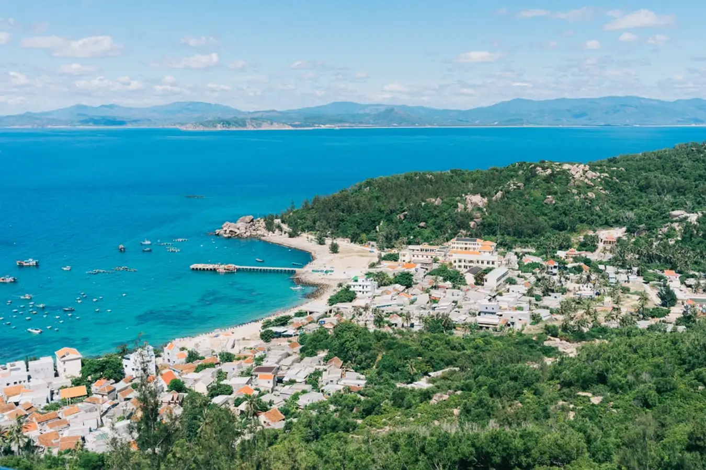
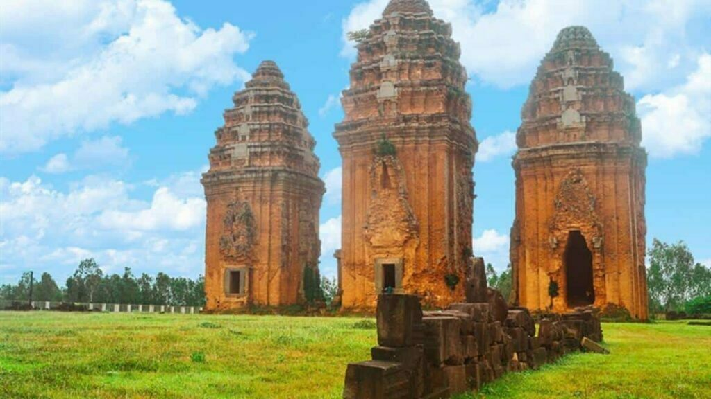
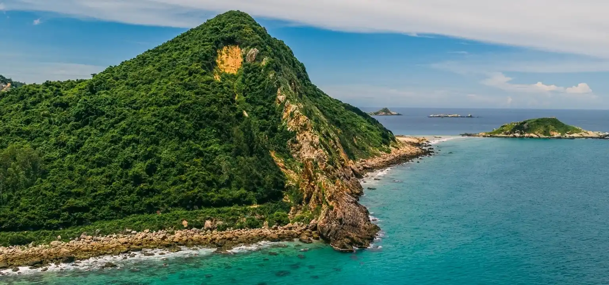
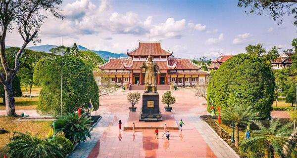

Kỳ Co
Kỳ Co là một trong những bãi biển đẹp nhất của tỉnh Bình Định, nằm ở xã Nhơn Lý, cách trung tâm thành phố Quy Nhơn khoảng 20–25 km. Nơi đây nổi tiếng với nước biển xanh trong, bãi cát trắng mịn và khung cảnh hoang sơ rất đẹp.

Cù Lao Xanh
Cù Lao Xanh là một hòn đảo nhỏ thuộc xã Nhơn Châu, thành phố Quy Nhơn, tỉnh Bình Định. Đảo nằm cách đất liền khoảng 24 km, nổi tiếng với nước biển trong xanh, thiên nhiên hoang sơ và không khí yên bình.

Trung Lương
Trung Lương là một khu dã ngoại và du lịch biển nổi tiếng nằm tại xã Cát Tiến, huyện Phù Cát, tỉnh Bình Định, cách thành phố Quy Nhơn khoảng 30 km. Nơi đây được ví như “Jeju của Việt Nam” vì có bãi biển xanh, núi đá bao quanh và phong cảnh rất đẹp.

Eo Gió
Eo Gió là một trong những địa điểm du lịch nổi tiếng nhất của tỉnh Bình Định, nằm tại xã Nhơn Lý, cách trung tâm thành phố Quy Nhơn khoảng 20 km. Đây là nơi được nhiều người gọi là nơi ngắm hoàng hôn đẹp nhất Việt Nam.

Tháp Bánh Ít
Tháp Bánh Ít là một trong những cụm tháp Chăm cổ nổi tiếng nhất ở Bình Định, nằm trên một ngọn đồi tại xã Phước Hiệp, huyện Tuy Phước, gần thành phố Quy Nhơn. Đây là di tích kiến trúc Chăm Pa có giá trị lịch sử và nghệ thuật rất cao ở Việt Nam.

Tháp Dương Long
Tháp Dương Long là một trong những cụm tháp Chăm cao và đẹp nhất Việt Nam, nằm tại huyện Tây Sơn, tỉnh Bình Định. Đây là di tích kiến trúc của nền văn hóa Chăm Pa cổ, được xây dựng khoảng cuối thế kỷ XII–đầu thế kỷ XIII.

Mũi Vi Rồng
Mũi Vi Rồng là một thắng cảnh thiên nhiên nổi tiếng nằm tại xã Mỹ Thọ, huyện Phù Mỹ (gần Hoài Nhơn), thuộc tỉnh Bình Định. Nơi đây được xem là một trong những địa điểm ngắm biển đẹp và hoang sơ nhất của khu vực miền Trung.

Bảo tàng Quang Trung
Bảo tàng Quang Trung là một trong những di tích lịch sử quan trọng nhất của tỉnh Bình Định, nằm tại huyện Tây Sơn, quê hương của phong trào Tây Sơn và Hoàng đế Quang Trung–Nguyễn Huệ. Đây là nơi lưu giữ nhiều hiện vật, tư liệu lịch sử về cuộc khởi nghĩa Tây Sơn và triều đại Quang Trung.
Bãi tắm Hoàng Hậu
Bãi tắm Hoàng Hậu là một trong những bãi biển nổi tiếng và độc đáo nhất của thành phố Quy Nhơn, nằm trong khu du lịch Ghềnh Ráng Tiên Sa. Nơi đây nổi bật với bãi đá tròn nhẵn như trứng chim khổng lồ nên còn được gọi là Bãi Trứng.